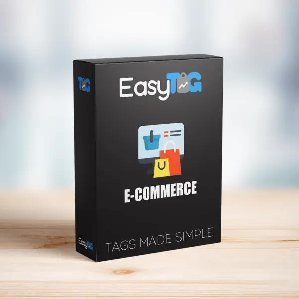
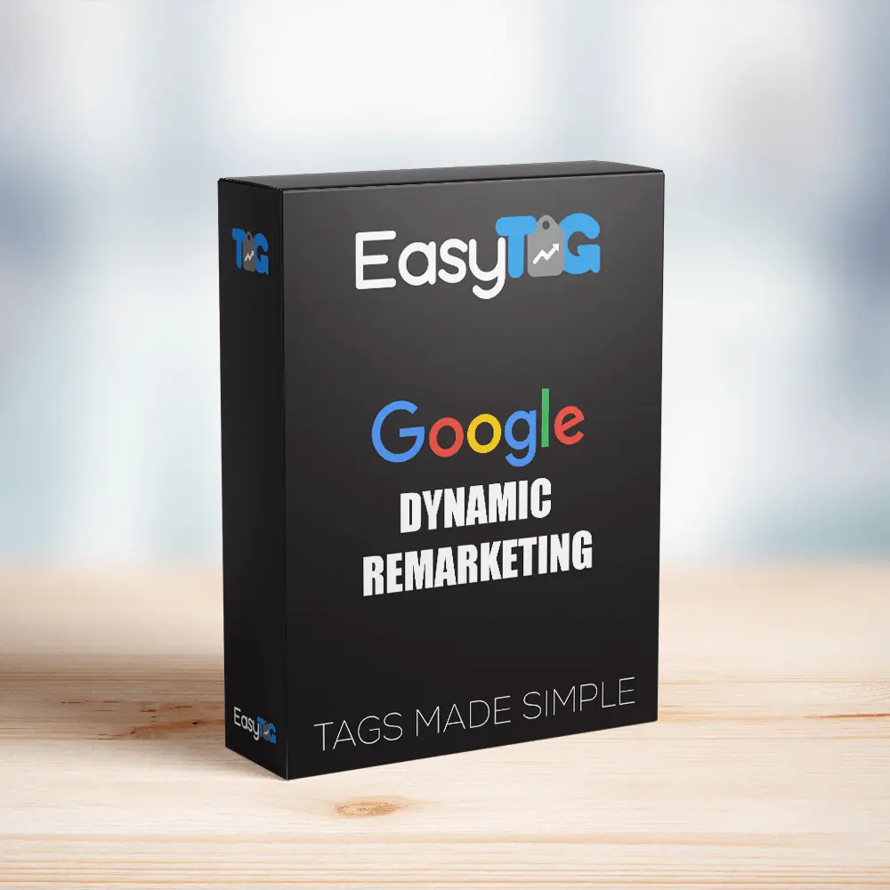
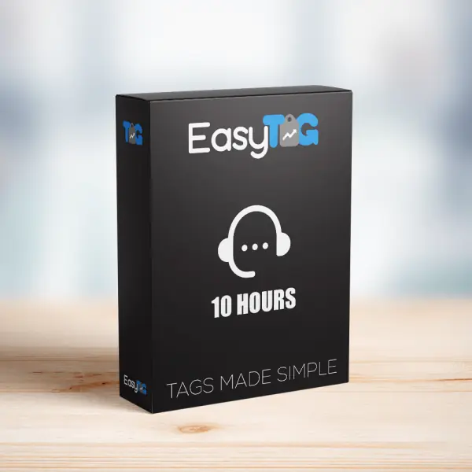

![Easy Tag]()
DataLayer: cos’è, perché è importante e come installarlo
Cos’è il DataLayer
Il DataLayer (in italiano spesso chiamato livello dati) è un oggetto JavaScript che il sito usa per trasmettere informazioni ordinate a Google Tag Manager e, in generale, alla piattaforma dei tag Google. Non è un report, non è un dashboard e non è un plugin: è un canale standard in cui il sito “mette” i dati che i tag devono leggere.
Secondo la documentazione ufficiale del data layer, il livello dati è pensato proprio per far sì che eventi e variabili arrivino ai tag in modo organizzato e prevedibile, invece di farli ricostruire leggendo pezzi sparsi della pagina. In pratica, al posto di chiedere a uno script di “indovinare” il prezzo da un elemento HTML, il sito dichiara esplicitamente prezzo, valuta e identificativo ordine nel DataLayer.
Tecnicamente, sul browser, il DataLayer è un array globale, di solito chiamato window.dataLayer. Si inizializza una sola volta e poi si arricchisce con messaggi successivi tramite push(). Ogni messaggio è un oggetto: può contenere un nome di evento, variabili di contesto e strutture più ricche, come i dati di un acquisto.
Perché è importante
Senza un DataLayer, molti setup dipendono dalla struttura visiva del sito: classi CSS, testi dei pulsanti, posizione di un form. Quando il tema cambia, un plugin viene aggiornato o il checkout viene ridisegnato, quei riferimenti si rompono e i tag smettono di funzionare o inviano dati incompleti.
Con un DataLayer ben progettato accade il contrario: i dati restano legati al significato dell’azione (acquisto, iscrizione, click sul telefono), non al modo in cui quella azione è disegnata a schermo. Questo riduce i costi di manutenzione, facilita il lavoro tra sviluppatori e media buyer e rende più affidabili le conversioni in Google Ads e gli eventi in Google Analytics 4.
C’è anche un vantaggio di governance. Documentare “cosa entra nel DataLayer e quando” crea un contratto chiaro tra chi sviluppa il sito e chi gestisce i tag. Se un nuovo evento serve per una campagna, si aggiunge un messaggio standard invece di inventare un selettore fragile.
Infine, il DataLayer è utile quando più strumenti leggono le stesse informazioni. Un solo purchase ben strutturato può alimentare analytics, conversioni pubblicitarie e, dove previsto, altri sistemi, senza duplicare logiche diverse in ogni tag.
Gli elementi di un messaggio DataLayer
Un messaggio tipico combina pochi mattoni ricorrenti. Il più importante è la chiave event: una stringa che descrive l’azione, ad esempio login, generate_lead o purchase. In Google Tag Manager puoi ascoltare quel nome con un attivatore di tipo evento personalizzato.
Accanto all’evento compaiono le variabili: coppie nome-valore che descrivono il contesto. Possono indicare il tipo di visitatore, la categoria di pagina, un colore scelto nel configuratore o il valore di una conversione. Google sottolinea l’importanza di usare gli stessi nomi su tutte le pagine: se in home usi visitorType, non chiamarlo visitor_type in checkout.
Per l’e-commerce si usa spesso un oggetto dedicato, ad esempio ecommerce, con campi come importo, valuta, identificativo transazione e elenco prodotti. Prima di un nuovo push e-commerce è buona pratica “pulire” lo stato precedente, così non si mescolano dati di un ordine con quelli del successivo.
Ecco un esempio minimale di inizializzazione e di un evento semplice:
window.dataLayer = window.dataLayer || [];
dataLayer.push({
event: 'login'
});E un push con più informazioni insieme, come consigliato quando un’azione ha sia un evento sia attributi utili ai tag:
dataLayer.push({
event: 'customize',
color: 'red',
conversionValue: 50
});Per un acquisto, la struttura diventa più ricca ma resta leggibile:
window.dataLayer = window.dataLayer || [];
dataLayer.push({ ecommerce: null });
dataLayer.push({
event: 'purchase',
ecommerce: {
transaction_id: 'ORD-2026-98451',
value: 249.00,
currency: 'EUR',
items: [{
item_id: 'SKU-7741',
item_name: 'Cronografo Automatico Acciaio',
price: 249.00,
quantity: 1
}]
}
});In tutti i casi, i nomi delle chiavi vanno tra virgolette quando contengono caratteri speciali, e il nome dell’oggetto è dataLayer in camel case: datalayer in minuscolo non funziona.
Come costruire il DataLayer
Costruire il DataLayer significa prima di tutto decidere quali azioni contano per il business e quali dati devono accompagnarle. Si parte da un piano di misurazione: pagine viste rilevanti, lead, iscrizioni, aggiunte al carrello, acquisti, click su telefono o WhatsApp. Per ogni azione si definisce un nome evento stabile e un elenco di parametri.
Poi si stabilisce chi scrive nel DataLayer. Di solito è il codice del sito o del CMS: un template della thank-you page, un modulo dopo l’invio del form, un gestore del click su un pulsante. Il marketing non dovrebbe dover “raspizzare” il DOM se il dato può essere dichiarato all’origine.
Un buon disegno separa i dati di pagina (titolo, percorso, tipo contenuto) dai dati di interazione (click, invio form) e dai dati transazionali (ordine, prodotti, valore). Su ogni caricamento pagina puoi dichiarare le variabili di contesto subito dopo l’inizializzazione, così sono disponibili quando si carica il contenitore GTM:
Le variabili restano valide mentre l’utente rimane su quella pagina. Se ti servono su più pagine (ad esempio lo stato “cliente” o “prospect”), vanno riproposte a ogni caricamento con la stessa convenzione di nomi.
Quando l’utente compie un’azione, non basta aggiornare una variabile: conviene includere sempre un event dedicato. Tag Manager elabora i messaggi in coda uno dopo l’altro; associare un nome evento rende prevedibile il momento in cui i tag devono attivarsi.
Come installarlo sul sito
L’installazione corretta segue un ordine preciso. Se il livello dati deve già contenere gli eventi e-commerce, il punto di partenza è il Tracker E-commerce; per gli ID prodotto verso Ads, Dynamic Remarketing; per il segnale di consenso, Consent Mode v2. Prima si crea (o si recupera) l’array dataLayer, poi si eventualmente spingono i dati necessari al page load, e solo dopo si carica lo snippet di Google Tag Manager. Google raccomanda di dichiarare il livello dati il più in alto possibile nel codice della pagina, sopra il contenitore.
Lo schema di base è questo:
L’espressione window.dataLayer = window.dataLayer || [] è fondamentale: evita di cancellare messaggi già in coda. Non assegnare mai un nuovo array con una scrittura del tipo dataLayer = [{...}] dopo che GTM è in ascolto: rischieresti di perdere dati e di interrompere il collegamento con il contenitore.
Per le interazioni successive (click, submit, completamento acquisto) usi solo dataLayer.push(...). Puoi collegarlo a un gestore di evento del sito, ad esempio sul click di un pulsante, oppure eseguirlo nel codice che conferma l’ordine lato server-rendered o nell’callback del checkout.
In Google Tag Manager, il passo successivo è configurare variabili del livello dati (per leggere chiavi come ecommerce.value) e attivatori sull’evento personalizzato corrispondente. Solo a quel punto colleghi i tag di GA4, Google Ads o altri destinatari.
In fase di collaudo verifica la coda in anteprima GTM o nella console del browser, controlla maiuscole e minuscole dei nomi, e assicurati che valori numerici (prezzi, quantità) restino numeri e non stringhe, quando i report se lo aspettano.
Buone pratiche in sintesi
- Inizializza sempre con
window.dataLayer = window.dataLayer || []prima dello snippet GTM. - Usa
pushper aggiungere dati; non sovrascrivere l’intero array. - Dai nomi stabili e coerenti a eventi e variabili su tutte le pagine.
- Includi un
eventquando un’azione deve far scattare dei tag. - Non inserire dati personali non necessari o non consentiti dal contesto di consenso.
- Documenta il piano di misurazione: è il manuale del tuo DataLayer.
FAQ sul DataLayer
Il DataLayer sostituisce Google Tag Manager?
No. Il DataLayer è il canale dati; Google Tag Manager è lo strumento che legge quei dati e decide quali tag attivare. Lavorano insieme: senza GTM (o gtag) i messaggi restano solo nel browser; senza DataLayer, GTM deve spesso affidarsi a selettori fragili.
Devo avere un DataLayer su ogni pagina del sito?
Sì, almeno l’inizializzazione dell’array e lo snippet del contenitore. Le variabili di contesto utili su più pagine vanno riproposte dove servono, con gli stessi nomi. Gli eventi di interazione si inviano solo quando l’azione avviene.
Cosa succede se cambio il tema WordPress o il template del checkout?
Se i tag dipendono dal layout, spesso si rompono. Se dipendono dal DataLayer, restano validi finché il sito continua a pubblicare gli stessi eventi e parametri. È uno dei motivi principali per investire in un livello dati.
Posso usare un nome diverso da dataLayer?
Sì, Google consente di rinominarlo, ma allora devi aggiornare in modo coerente lo snippet del contenitore e tutte le chiamate push. Nella maggior parte dei progetti conviene mantenere il nome predefinito dataLayer per ridurre errori.
Chi dovrebbe occuparsi del DataLayer in azienda?
Idealmente è un lavoro condiviso: il marketing definisce cosa misurare, lo sviluppo implementa i push nei punti giusti del sito, e chi gestisce GTM collega variabili, attivatori e tag. EasyTag Pro interviene proprio su questo raccordo, quando serve un’architettura chiara senza risorse interne dedicate.
Inizializzazione e integrità del dataLayer
Cos'è esattamente il dataLayer nella Tag Platform di Google?
Il dataLayer è un array JavaScript globale, di default window.dataLayer, che passa variabili ed eventi dalla pagina a Google Tag Manager e a gtag.js.
- Non si leggono prezzi, id o stati del form dal DOM.
- I container come il Tracker E-commerce e il Dynamic Remarketing dipendono da questo livello.
- La guida operativa è questa pagina; il contesto del team è in Chi siamo.
Perché il dataLayer si inizializza con window.dataLayer = window.dataLayer || [] prima dello snippet?
Per creare l'array solo se non esiste, senza cancellare push già presenti. GTM e gtag.js trovano così un'istanza valida all'avvio. Lo snippet di Google Tag Manager va caricato dopo questa riga, come descritto nella sezione di installazione di questa guida.
Cosa succede se si sovrascrive window.dataLayer = [] o window.dataLayer = {} dopo il caricamento?
Si rompe il riferimento su cui GTM e gtag.js hanno agganciato listener e coda interna.
- Gli eventi già in coda si perdono.
- I tag non partono o partono con dati incoerenti.
- Non usare un oggetto
{}: il dataLayer è un array, non una mappa.
Coda FIFO e dataLayer.push
Come elabora i messaggi il dataLayer?
Con una coda FIFO (First-In, First-Out): i push si leggono uno alla volta, nell'ordine di arrivo. Se il messaggio contiene event, Google Tag Manager valuta i trigger e attiva i tag collegati prima di passare al messaggio successivo.
Cosa significa che un dataLayer.push() da uno script esterno o da un Custom HTML viene accodato?
L'esecuzione è asincrona rispetto agli eventi già in coda. Una variabile scritta senza event può non essere ancora visibile quando scatta l'evento successivo. Per sincronizzare, invia sempre una chiave event dedicata e usa un attivatore Evento personalizzato. È il modo in cui il Tracking Click Telefono e il TAG Email pubblicano il click.
Perché è sconsigliato mettere gtag.js dentro un tag HTML personalizzato in GTM?
Perché duplica il ciclo di vita del tag, può confliggere sulla coda e su gtag(), e salta i controlli nativi di GTM, consenso incluso. Usa i modelli di tag nativi per Google Ads, Google Analytics 4 e Floodlight.
Come si inviano un evento e più variabili in un solo push?
Con un unico oggetto: dataLayer.push({event: 'customize', color: 'red', conversionValue: 50}). Tutte le chiavi entrano nello stato del dataLayer e sono leggibili dai tag attivati da quell'evento. Non spezzare valore e nome evento in due push diversi.
Cosa accade se si esegue il push di una variabile con lo stesso nome di una chiave già esistente?
Il nuovo valore sovrascrive il precedente nello stato corrente, da quel punto della coda in avanti. I messaggi già elaborati non vengono riscritti.
Quanto restano attive le variabili inserite nel dataLayer?
Restano disponibili per tutta la permanenza su quella pagina, finché non le sovrascrivi o non resetti lo stato. Su più pagine vanno ripubblicate a ogni caricamento, con lo stesso nome: visitorType in una pagina e visitor_type in un'altra sono due chiavi diverse.
Qual è la differenza tra dataLayer.push(function) e gtag(...)?
Se passi una funzione a dataLayer.push(function(){ ... }), this punta al modello dati astratto di GTM (this.set, this.get, this.reset). gtag(function(){ ... }) non è un comando valido: la funzione viene ignorata.
Modello dati, nome personalizzato e sintassi
A cosa serve this.reset() dentro una funzione passata a dataLayer.push()?
Ripulisce lo stato accumulato nel modello dati. Serve sulle pagine che restano aperte a lungo e nelle Single Page Application, per non trascinare valori della vista precedente. Il pageview delle SPA va poi rinviato come descritto nella guida Google Analytics 4.
Come si usano this.set() e this.get() nei metodi personalizzati del dataLayer?
Leggono e scrivono coppie chiave-valore sul modello dati astratto, in modo controllato. Esempio: this.set('time', new Date()) e, in un passo successivo, this.get('time'). Non sostituiscono un dataLayer.push con event quando devi attivare un tag.
Si può rinominare dataLayer?
Sì. Cambia il nome dell'array nello snippet, passa l=myNewName nell'URL dello script GTM e allinea ogni chiamata a window.myNewName.push(...). Se una sola integrazione continua a scrivere su dataLayer, gli eventi si dividono su due code.
Quali sono gli errori sintattici più frequenti su dataLayer.push()?
datalayer.pushal posto didataLayer.push(la L è maiuscola).- Chiavi con caratteri speciali, come
new-variable, scritte senza virgolette. - JSON malformato: virgola finale, apici singoli dove il parser si aspetta JSON stretto, parentesi non chiuse.
Tag Google, verifica e un solo dataLayer
Come si verifica in tempo reale lo stato del dataLayer?
Con Google Tag Assistant su tagassistant.google.com, oppure con la modalità Anteprima di Google Tag Manager. Per ogni evento in sequenza vedi i valori del dataLayer e lo stato del consenso. Il consenso si approfondisce nella guida Consent Mode.
Cos'è il Tag Google (gtag.js) e come si collega a più destinazioni?
È un solo framework JavaScript che raccoglie i dati e li instrada verso più destinazioni: Google Ads, Google Analytics, Floodlight e altre, tramite un TAG_ID o configurazioni collegate. In un contenitore GTM lo stesso ruolo lo fanno i tag nativi, non una seconda copia di gtag incollata in pagina.
Qual è il ruolo del prefisso dell'ID (GTM-, G-, AW-) nell'URL dello script?
Dice al loader che tipo di contenitore sta avviando e quali permessi applicare.
GTM-è un contenitore Google Tag Manager.G-è una proprietà Google Analytics 4.AW-è un account Google Ads.
Perché gtag('config', ...) è indicato come deprecato negli snippet più recenti?
Google sposta la configurazione delle destinazioni nell'interfaccia di Google Tag Manager e, in pagina, verso gtag('set', ...). gtag('config') già pubblicato resta retrocompatibile: non va rimosso a metà migrazione senza un piano di misura.
Come funziona il raggruppamento e l'instradamento in gtag.js?
Puoi centralizzare i parametri comuni e mandare un evento solo ad alcune destinazioni, per esempio un Measurement ID G- oppure un account AW-, invece di inviare tutto ovunque. È lo stesso principio del parametro send_to spiegato nella guida Tag nativo Google Ads.
Come si verifica nella scheda Rete che il tag stia trasmettendo?
Filtra le richieste per dominio.
googletagmanager.comcarica il contenitore.google-analytics.comoanalytics.google.comportano gli hit GA4.googleadservices.come i domini pubblicitari Google portano Ads.doubleclick.netcompare con Floodlight.
Come cambia il debug con il tagging lato server?
Nel browser vedi le richieste verso il tuo endpoint di tagging, di solito un sottodominio di prima parte. I colpi verso i server finali di Google Ads e Google Analytics partono dal server container, non dal browser dell'utente.
Cos'è il gateway del tag Google per gli inserzionisti?
È una configurazione che fa passare le richieste del tag da un percorso di prima parte controllato da te. Serve a rendere la misura più continua quando il browser limita gli script di terze parti, sempre nel rispetto del Consent Mode.
Come si gestisce il tagging sulle pagine AMP rispetto al web standard?
AMP ha componenti nativi per i tag e per GTM, con limiti propri. GTM per AMP non copre Google Analytics come il web: servono snippet AMP dedicati e va controllato il passaggio di cid e gclid verso le pagine non AMP.
Come si filtra il traffico di integrazioni CMS, per esempio Shopify, in Google Analytics?
Con filtri dei dati o esclusioni dedicate, così gli eventi automatici del CMS e il traffico interno non gonfiano sessioni e conversioni. Il funnel che vuoi leggere in report è quello del Tracker E-commerce, non quello di prova del tema.
Perché usare un solo dataLayer per pagina anche con più tag?
Un solo array tiene un ordine temporale unico. Due code separate fanno leggere a un tag valori assenti o vecchi. Vale anche quando in pagina convivono GA4, Google Ads e il tag di Consent Mode v2.
Prodotti che poggiano sul DataLayer
Senza questo livello dati i container sotto non hanno eventi affidabili. Se va costruito sul tuo CMS, si fa in supporto ore.

Tracker E-commerce
Data layer e eventi view_item, cart, checkout, purchase.

Dynamic Remarketing
Eventi prodotto e allineamento feed per Google Ads.

